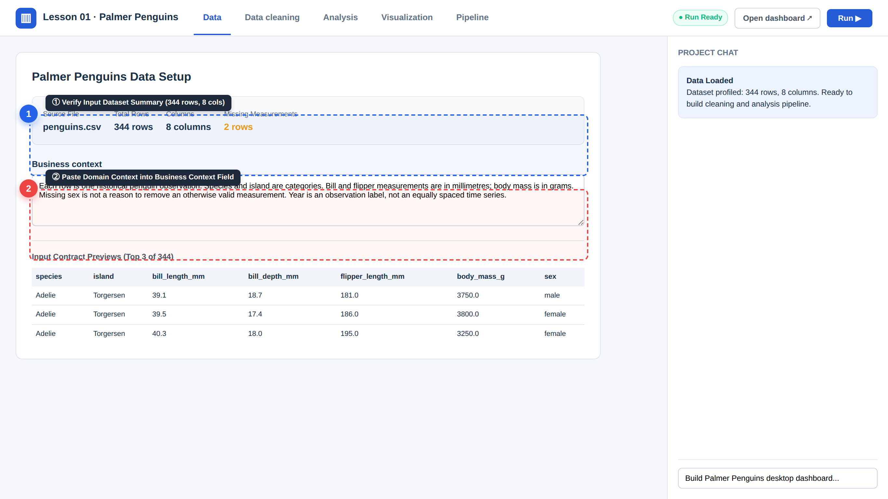
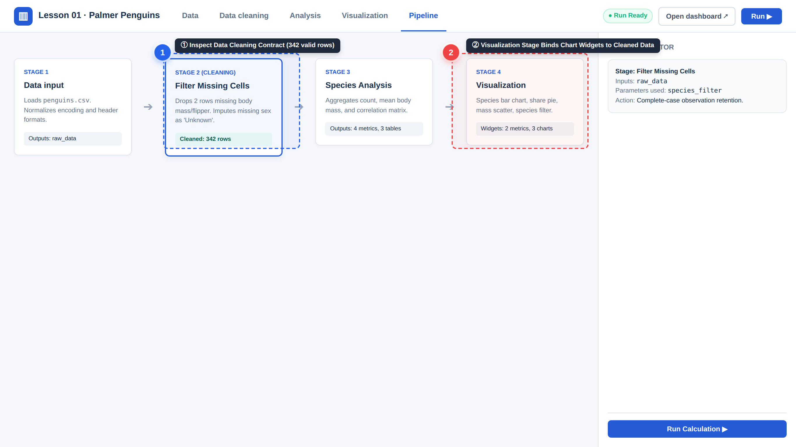
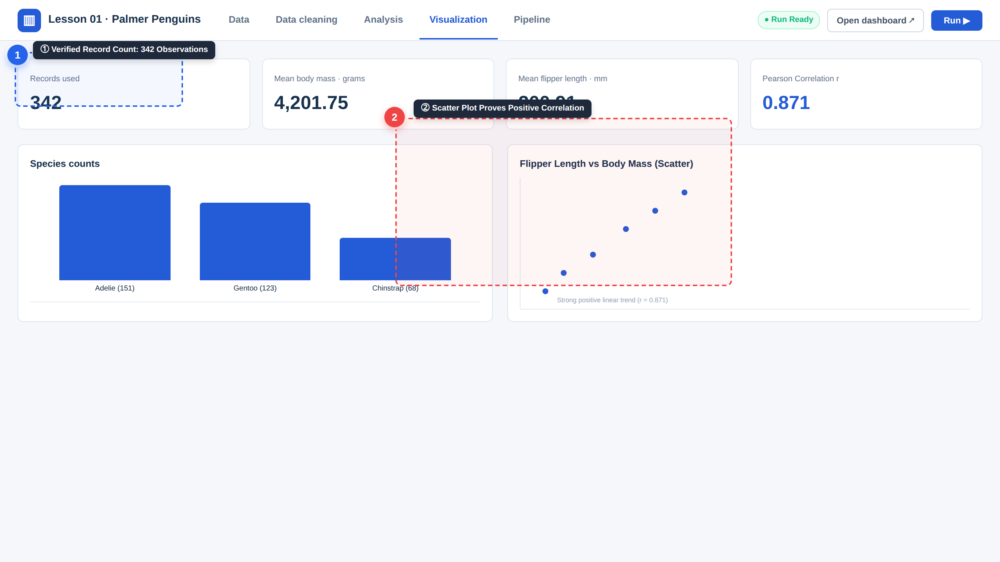
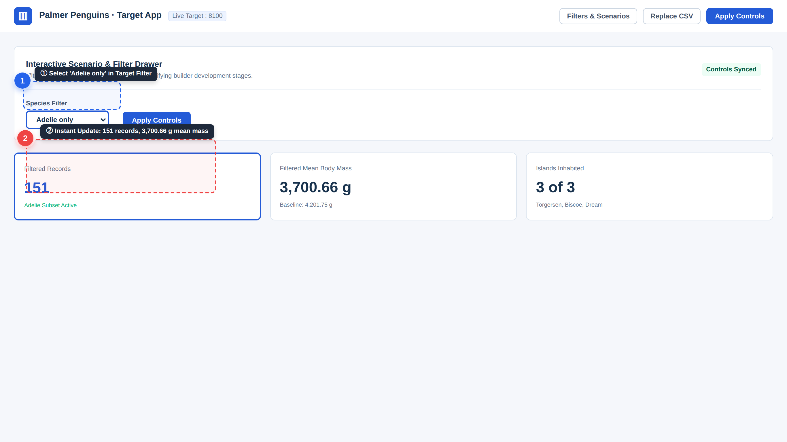

Lesson 01 / Palmer Penguins
Explore and clean data.
How do we establish rigorous complete-case data cleaning, inspect physical measurements across species, and verify bivariate relationships without guessing?
Complete-case cleaning
Missing value imputation
Grouped aggregations
Scatter plots
Interactive filters
Part 1 · The Analytical Problem
Dirty data creates false conclusions.
Real-world datasets contain missing measurements, ambiguous string tokens, and incomplete entries. If an analyst computes totals or averages before cleaning, missing cells either corrupt aggregations or cause runtime calculation crashes.
In this lesson, we study 344 historical penguin observations from the Palmer Archipelago. Our goal is to determine how body mass and flipper length relate across three species (Adelie, Gentoo, Chinstrap) while explicitly handling missing biological measurements.
Part 2 · The Visual Concept
What complete-case cleaning represents.
1. Complete-Case Measurement Filter
Rows missing crucial numeric measurements (flipper length or body mass) are filtered out, while rows missing descriptive labels (like sex) are preserved and labeled Unknown. This preserves sample size while preventing calculation crashes.
2. Bivariate Scatter & Grouped Bar Bindings
Once cleaned, we bind observations to standard column charts. We map species counts to a bar chart and flipper length vs. body mass to a scatter plot, establishing that body mass scales positively with wing flipper size (r = 0.871).
Part 3 · Data Dictionary
Palmer Penguins Dataset (CC0 License).
344 source rows
8 columns
2 missing measurements
11 missing sex labels
Part 4 · Step-by-Step Instructions
Build the dashboard in WPS-AI Studio.
01
Upload Data & Paste Business Context
Launch the studio via python launcher.py. Create a new project, upload penguins.csv, and paste the following into the Business context field:
Each row is one historical penguin observation. Species and island are categories. Bill and flipper measurements are in millimetres; body mass is in grams. Missing sex is not a reason to remove an otherwise valid measurement. Year is an observation label, not an equally spaced time series.
02
Prompt the AI Stage Creator
In the Chat composer, set the context to Project and send the following prompt:
Build a desktop dashboard with separate Data cleaning and Analysis stages and Visualization widgets.
In cleanup, remove rows missing bill_length_mm, bill_depth_mm, flipper_length_mm or body_mass_g; replace missing sex with 'Unknown'.
Add a species select filter on cleaned data (All, Adelie, Gentoo, Chinstrap).
Create KPI metrics 'Records used' and 'Mean body mass'.
Create bar chart 'Species counts', pie chart 'Species share', and scatter plot 'Mass and flipper length'.
Create the summary table 'Species summary' with species, count, and mean body mass.
Save stages; I will select Run.
Review the proposed changes and select Apply. Then select Run ▶ in the top header.
Part 5 · Annotated Screenshot Reference
Compare against the verified Studio UI.
Use these full-browser annotated captures to verify each stage of your execution:

Annotated Guidance: ① Verify that the data profiler reads 344 rows and 8 columns. ② Paste domain rules into the Business Context textarea.

Annotated Guidance: ① Inspect the Cleaning stage to confirm 2 rows with missing measurements are dropped (342 cleaned rows). ② Verify the Visualization stage binds chart widgets to cleaned outputs.

Annotated Guidance: ① Confirm Records used = 342 and Mean body mass = 4,201.75 g. ② Inspect the positive bivariate scatter plot (r = 0.871).

Annotated Guidance: ① In the Target dashboard (separate port), select 'Adelie only'. ② Select Apply Controls: instant update to 151 records and 3,700.66 g mean mass.
Part 6 · Worked Reference Dashboard
Verified Numerical Checkpoints.
Part 7 · Troubleshooting
What to check if numbers differ.